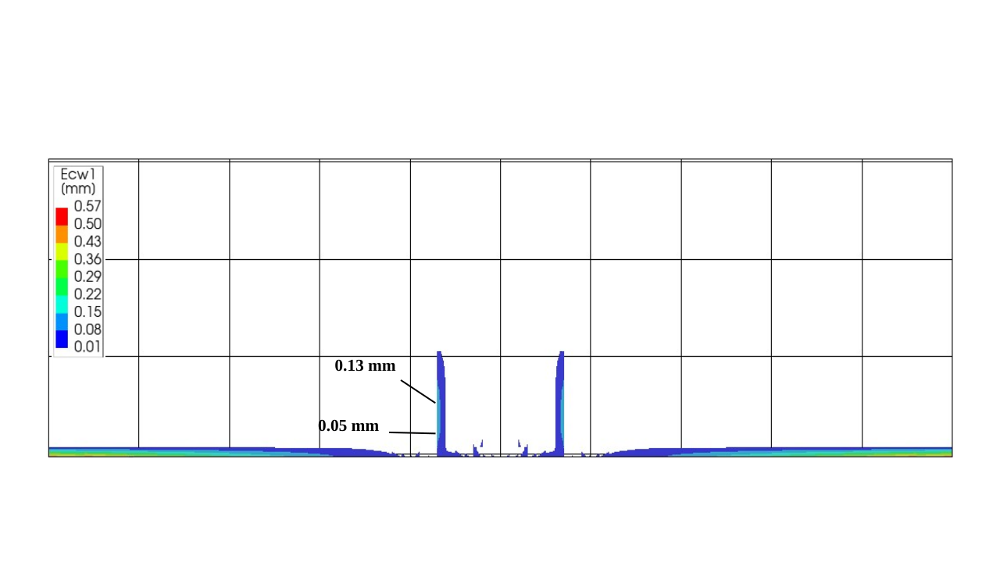
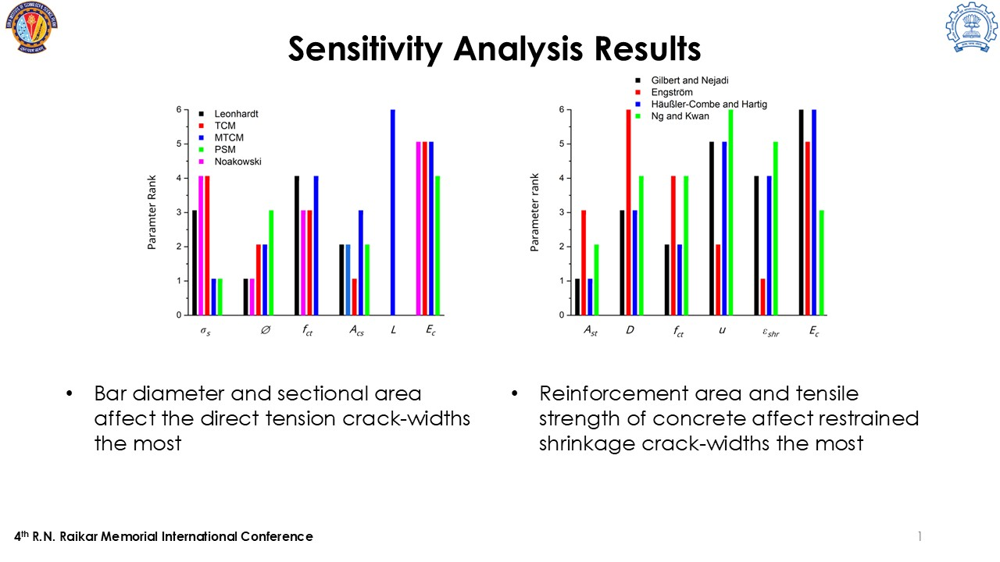
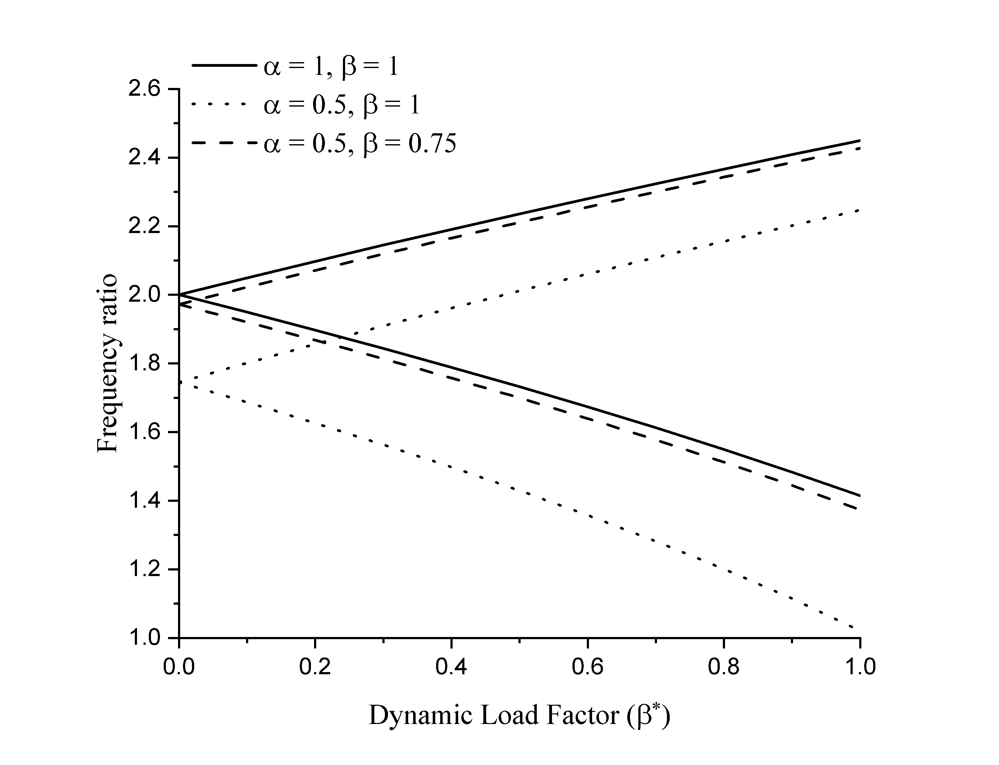
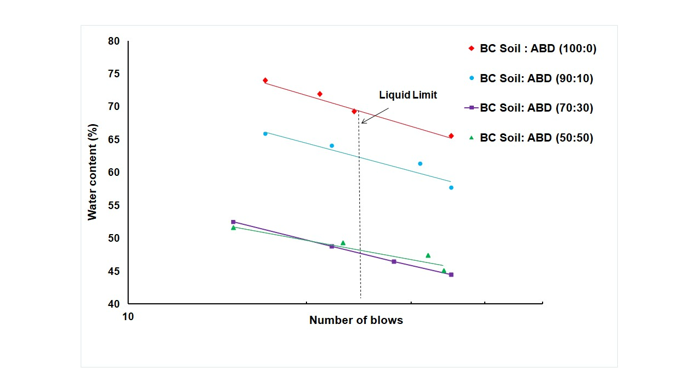

|
Amrit Bahl Hello! I am Amrit Bahl, currently a first year graduate student at Stanford University, pursing my Master's in Mechanics and Computation in the department of Civil & Environmental Engineering. I have completed my Bachelor's in Civil Engineering from BITS-Pilani, India. I wrote my undergraduate thesis on numerically simulating shrinkage induced cracks in base-restrained reinforced concrete walls and tanks under the supervision of Prof. M. N. Shariff at the Indian Institute of Technology Bombay. During my undegraduate studies, I also also had the priviledge of working with Prof. Rajesh Kumar at BITS-Pilani, where we tackled the dynamic instability problem of a CNT-fiber composite beam. I also conducted a numerical study to develop a novel Compressed Air Energy Storage (CAES) system for a project funded by Siemens Energy with him and Prof. Subhasis Pradhan. My research interests lie in the field of Computational Mechanics, i.e., I find it most satisfying to understand the mechanics background of a problem and then solve it efficiently using computational tools. |
{kind=link}
Research |
|
 |
Studies on base restrained walls and tanks subjected to shrinkage Amrit Bahl, M N Shariff, Sankati YellamandaACI Structural Journal Preprint available at: International Concrete Abstracts Portal
|
|
 |
A comparison of analytical models for crack-width prediction in RC ties subject to direct tension and restrained shrinkage A R Bahl, Pawan Prakash, M N Shariff4th R. N. Raikar Memorial International Conference, 2024 (Oral Presentation) Paper By comparing the analytical models with experimental data and using the Sobol's sensitivity analysis, we were able to determine the most important parameters affecting crack-widths that can be used by future analytical models. |
|
 |
Dynamic stability of randomly distributed CNT reinforced composite beam using the generalized differential quadrature method A R Bahl, Rajesh KumarExperimental and Mathematical Modeling of Aerospace and Civil Engineering Composite Structures (Book Chapter) Publication in press We solved for the dynamic stability for a CNT reinforced composite beam using the generalized differential quadrature (GDQ) method and conducted a paramteric analysis to determine the effect of various parameters on the dynamic instability regions. |
|
 |
Stabilization of Black Cotton Soil with Alkali Bypass dust Amrit Bahl, Pulkit Vijay V. K. KanaujiaYoung Researchers Conclave - CSIR-CRRI One Week One Lab, 2023 (Poster Presentation) Poster We experimentally found the improvement in the index properties of Black Cotton soil when treated with Alkali Bypass dust, a waste product, and proposed an optimum mix for the same. |
Other ProjectsThese are some of my course projects and unpublished work. |
User defined 3D elastic first-order analysis program for MASTAN2
Stanford CEE280: Advanced Structural Analysis, Fall 2025Code Design Document
Udank Jain and I wrote a program to run any user defined 3D elastic first-order analysis in MASTAN2 using Object Oriented Programming.
Miscellanea |
Teaching |
Undergraduate Teaching Assistant, Introduction to FEM (CE F435), BITS-Pilani.
Undergraduate Teaching Assistant, Soil Mechanics (CE F243), BITS-Pilani. Undergraduate Teaching Assistant, Fluid Mechanics (CE F231), BITS-Pilani. |
|
The source code of this website is taken from Jon Barron. |